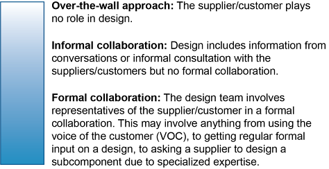
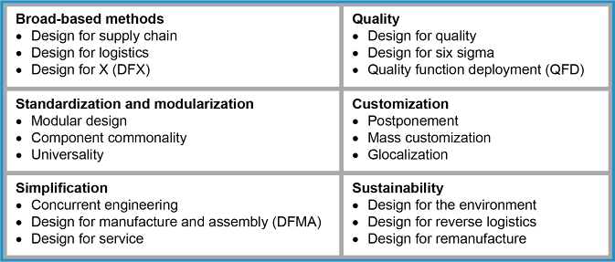

Design expenses = ~5–15% of product cost, but determine ~70% of total cost. The 6 design objectives:
Traditional (sequential) design: Marketing → Engineering → Purchasing → Production (over-the-wall). Problems build in unknowingly; multiple costly redesign rounds.
Collaborative design: Cross-functional team (engineering, purchasing, production, logistics, suppliers, customers) from the start. Everyone agrees before production begins — fewer cost overruns, faster to market, higher quality.


Design for Logistics (DFL): minimizes supply chain costs by:
3 types of standardization:
Simplification = improving quality and cutting costs by removing complexity.
Concurrent Engineering (CE): design events happen in parallel rather than sequentially — shortens design cycle. Now largely replaced by DFMA.
DFMA is a further development of CE that also includes suppliers, manufacturing engineers, and warehouse managers.
Design for service: product can be maintained, repaired, or upgraded easily. If maintenance is simple, customers have better experiences post-purchase. Also includes logistics of replacement parts supply.
Click card to flip · Use arrows or shuffle to practise